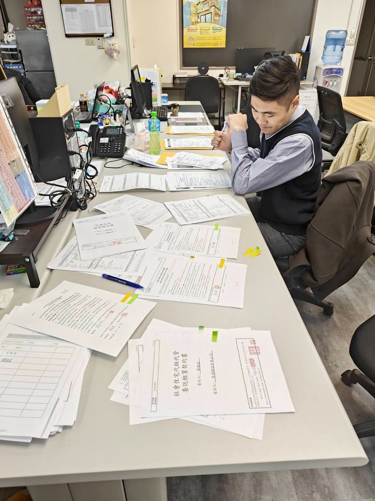
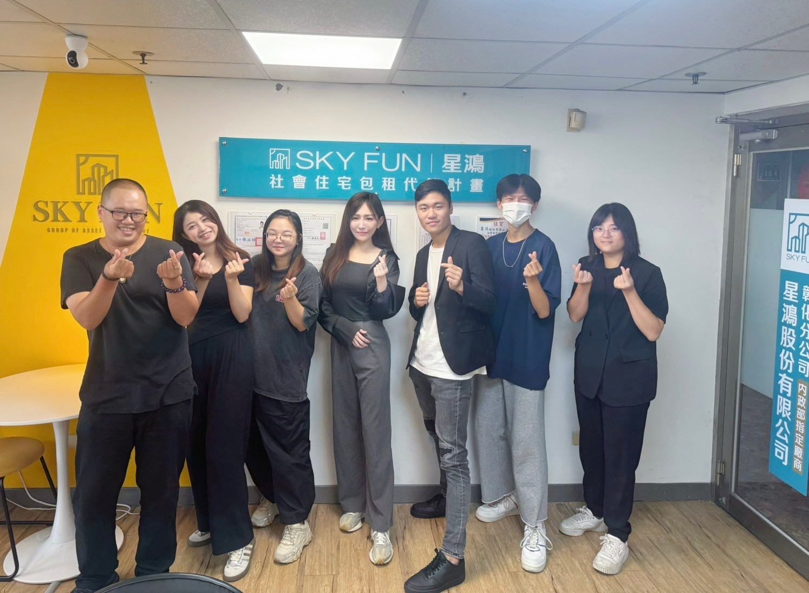
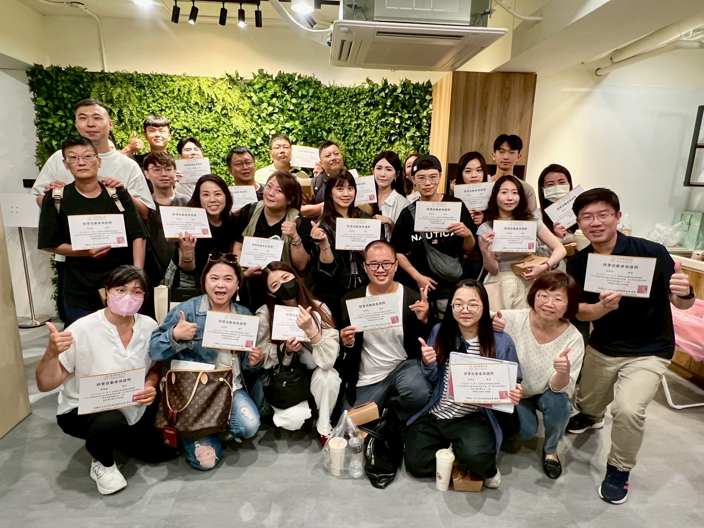
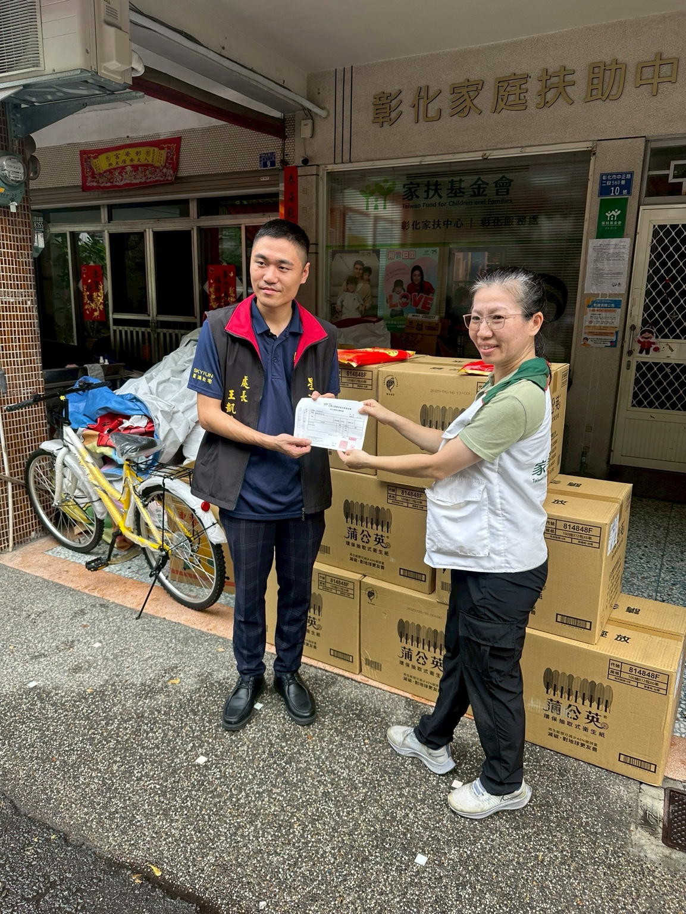
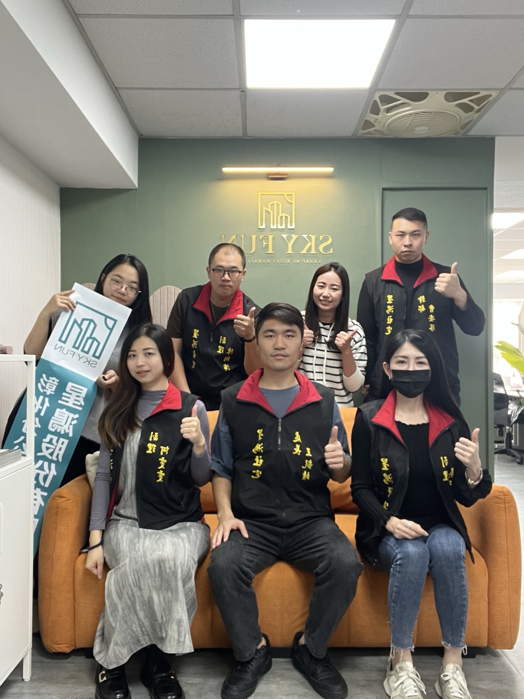
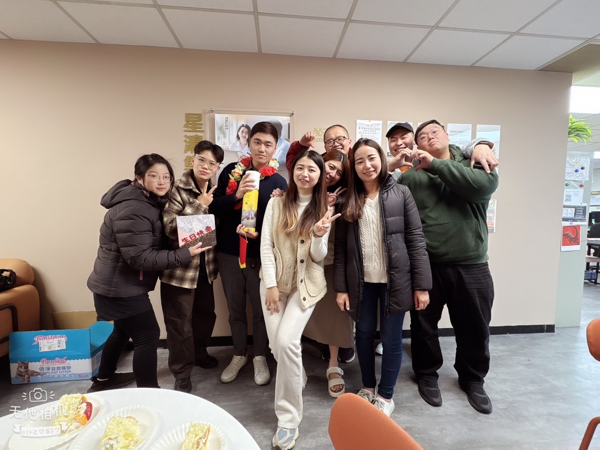
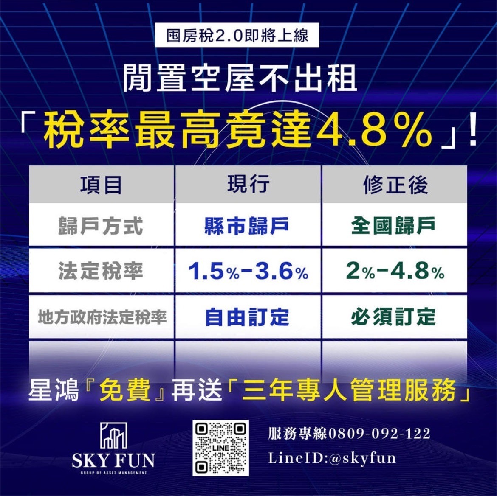

我相信真正的管理不是靠個人燃燒，而是把目標、流程、表單、人與紀律整合成能持續運轉的系統。我的工作橫跨營業處經營、教育訓練、社會住宅推廣與AI工具導入。
熟悉房東、房客、業務、行政與補助流程，能從前線問題反推制度設計。
設計新人訓練、面試制度、課程流程與成績追蹤，讓人才培育更標準化。
把AI導入文案、簡報、表單、SOP、教案與管理分析，提升日常工作效率。
核心能力不是單點技能，而是把業務、管理、教育與AI整合成一套可執行的營運方法。
包租代管、公益出租人、租屋補助、房東開發、房客服務與行政流程控管。
目標設定、KPI追蹤、招募節奏、新人流程、日週月管理與責任分工。
課程設計、講師培訓、面試SOP、衝刺班制度與新人留存改善。
ChatGPT辦公應用、AI文案、AI簡報、AI表單設計與AI管理輔助。
把混亂問題拆成流程、表單、角色與紀律，讓團隊能複製成功經驗。
透過內容、課程、社群與網站，建立專業信任與長期影響力。
專業不是自己說，而是從服務現場、教育訓練、公益活動與團隊成果累積出來。





這裡作為未來招生、企業內訓、業務培訓與諮詢合作入口。
給想用AI提升工作效率、文案、簡報、表單與管理分析能力的人。
把包租代管從開發、帶看、成交到管理，拆成可學習、可複製的方法。
目標要明確，流程要簡化，表單要追蹤，人要放對位置，紀律要持續執行。管理不是靠感覺，而是靠系統。
先定義成果，再反推流程、表單、人與紀律。
方向錯了，努力只會放大錯誤；選對關鍵流程，成果才會出來。
真正的經營不是自己很強，而是讓團隊中的每個人都能變強。
歡迎洽詢社會住宅、包租代管、租金補助、教育訓練、AI工作流導入與團隊經營合作。
社會住宅專業專區
房東最在意的節稅、補助、風險與管理，用清楚圖卡與制度化流程降低決策成本。
